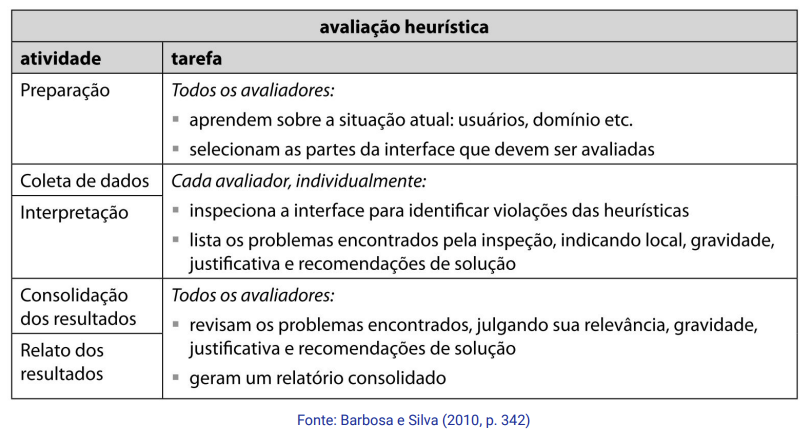

Disciplinas
INTERFACE HUMANO-COMPUTADOR-T01-2024-2 Concluído
Materiais
Vídeo 1 - [UFMS Digital] Interface Humano-computador - Módulo 3 - Unidade 2 sendProf.ª ministrante: Lucineide Rodrigues da Silva
Conteúdo
Métodos de avaliação de IHC
Avaliação de IHC.
- Inspeção:
- Feita por especialista;
- Avaliação heurística;
- Observação:
- Envolve participação de usuário;
- Teste de usabilidade.
Avaliação Heurística.
- Busca por problemas de usabilidade;
- Método simples, rápido e barato se comparado aos empíricos;
- Baseia-se em um conjunto de heurísticas;
- Podem ser as de Nielsen ou outras, a depender do contexto e objetivo do projeto;
- Web, móvel, vestível, voz, gestos.
https://s3.glbimg.com/v1/AUTH_35862ca5c6ab48b992baf1f1b4f7062e/extra-globo-com/incoming/23207021-615-ab9/w640h360-PROP/laptop-3087585_1920.jpg
Heurísticas de Nielsen - 1.
- Visibilidade do estado do sistema;
- Os usuários precisam saber o que está acontecendo com o sistema;
- Feedback adequado.

Heurísticas de Nielsen - 2.
- Correspondência entre o sistema e o mundo real;
- O sistema deve conversar com o usuário com familiaridade.
Heurísticas de Nielsen - 3.
- Controle e liberdade do usuário;
- O sistema deve ajudar o usuário a se recuperar de erros.
Heurísticas de Nielsen - 4.
- Consistência e padronização;
- Termos e ações devem aparecer de forma parecida em todas as áreas do sistema.
Heurísticas de Nielsen - 5.
- Reconhecimento em vez de memorização;
- O sistema deve exibir objetos e ações visíveis para o usuário.
Heurísticas de Nielsen - 6.
- Flexibilidade e eficiência de uso;
- O sistema deve apoiar usuários iniciantes e avançados;
- Deve fornecer meios de interação rápida e eficiente.
Heurísticas de Nielsen - 7.
- Projeto estético e minimalista;
- O sistema não deve exibir informação desnecessária.
Heurísticas de Nielsen - 8.
- Prevenção de erros;
- O sistema deve evitar que o usuário cometa erros.
Heurísticas de Nielsen - 9.
- Ajude os usuários a reconhecerem, diagnosticarem e se recuperarem de erros;
- O sistema deve apresentar boas mensagens de erro.
Heurísticas de Nielsen - 10.
- Ajuda e documentação;
- O sistema deve fornecer ajuda e documentação;
- Fácil de encontrar;
- Contextualizada;
- Que apoie a realização da tarefa;
- Curta e direta.
Atividades da Avaliação Heurística.
Relato de problemas.
- Para cada problema identificado, você deve anotar:
- Qual diretriz foi violada;
- Em que local o problema foi encontrado;
- Qual a severidade do problema;
- Uma justificativa de por que aquilo é um problema;
- Ideias de soluções.
Severidade do problema.
- Para definir é preciso considerar:
- Frequência em que ocorre;
- O impacto causado;
- A persistência.
- Escala:
- Problema cosmético;
- Problema pequeno;
- Problema grande;
- Problema catastrófico.
Relato de resultados.
- Objetivos e escopo da avaliação;
- Breve descrição do método de avaliação heurística;
- Conjunto de diretrizes utilizado;
- Número e perfil dos avaliadores;
- Lista dos problemas encontrados, indicando para cada um:
- Local onde ocorre;
- Descrição do problema;
- Diretriz(es) violada(s);
- Severidade do problema;
- Sugestões de solução.
Teste de usabilidade.
- Busca problemas de usabilidade em experiências de uso real;
- Observa e mede conforme os critérios estabelecidos;
- Quantidade de erros;
- Tipos de erros;
- Tempo para executar tarefas;
- Satisfação do usuário.
https://miro.medium.com/v2/resize:fit:1100/format:webp/1*sVkWI02iD5w_rLkVgwQ65w.png

Relato de resultados.
- Objetivos e escopo da avaliação;
- Breve descrição do método de teste de usabilidade;
- Número e perfil dos avaliadores e dos participantes;
- Tarefas executadas pelos participantes;
- Tabelas e gráficos com resumo das medições realizadas.
- Lista dos problemas encontrados, indicando para cada um:
- Local onde ocorre;
- Descrição e justificativa;
- Discussão, indicando os fatores de usabilidade prejudicados;
- Sugestões de solução.
Referências:
BARBOSA, Simone Diniz Junqueira; SILVA, Bruno Santana da. Interação Humano-Computador. Rio de Janeiro: Elsevier, 2010. Capítulo 10.